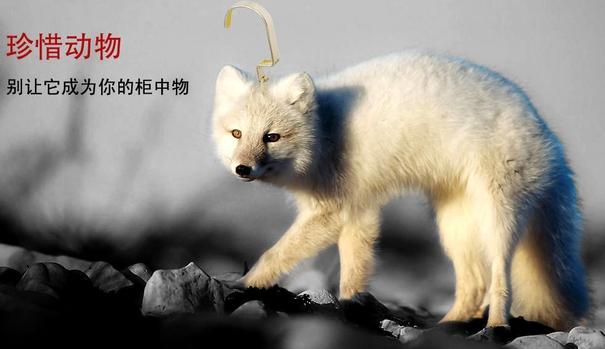

我们的宗旨
我们致力于终止动物虐待 我们推动世界保护动物保护野生动物是我们每个人的责任
世界动物保护协会(World Animal Protection)是一个国际性非盈利组织，总部位于伦敦，在全球50多个国家和地区开展动物保护工作。世界动物保护协会以科学、合作、务实的方式推动各方共同保护动物。协会开展的各项工作全部建立在动物福利科学坚实的基础之上。 世界动物保护协会中国代表处于2007年在北京设立。目前，协会在中国开展的项目，包括野生动物保护、责任养犬、人道与可持续性农业等项目。同时，协会还积极准备为受自然灾害影响的动物和社区提供紧急救助。关于我们
-
野生动物
同合作伙伴一起提高大众野生动物保护意识，制止虐待野生动物和非法利用野生动物牟利的行为。包括：让公众了解旅游业对野生动物保护的影响，支持旅游企业和游客选择动物友好的方式出行。 -
社区动物
协助政府通过人道的方式妥善控制犬只的数量；为犬只接种疫苗预防狂犬病，以避免不必要的犬只扑杀行为；宣传并推动责任养宠活动；避免工作动物过劳或遭受虐待。 -
农场动物
提倡科学人道的养殖模式，支持各国因地制宜，采取适合本国国情的养殖模式。协会所提倡的科学和人道的养殖模式既能减少动物的痛苦，又能帮企业长期可持续盈利。
主要工作
